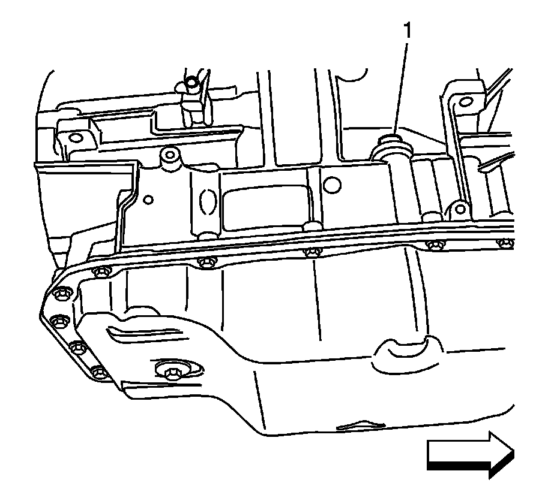
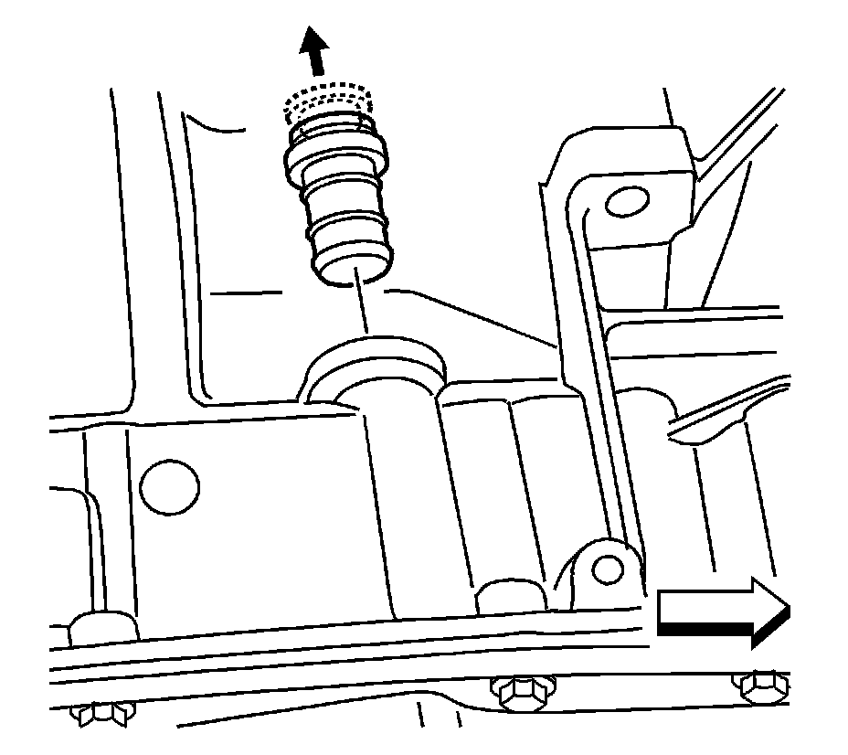
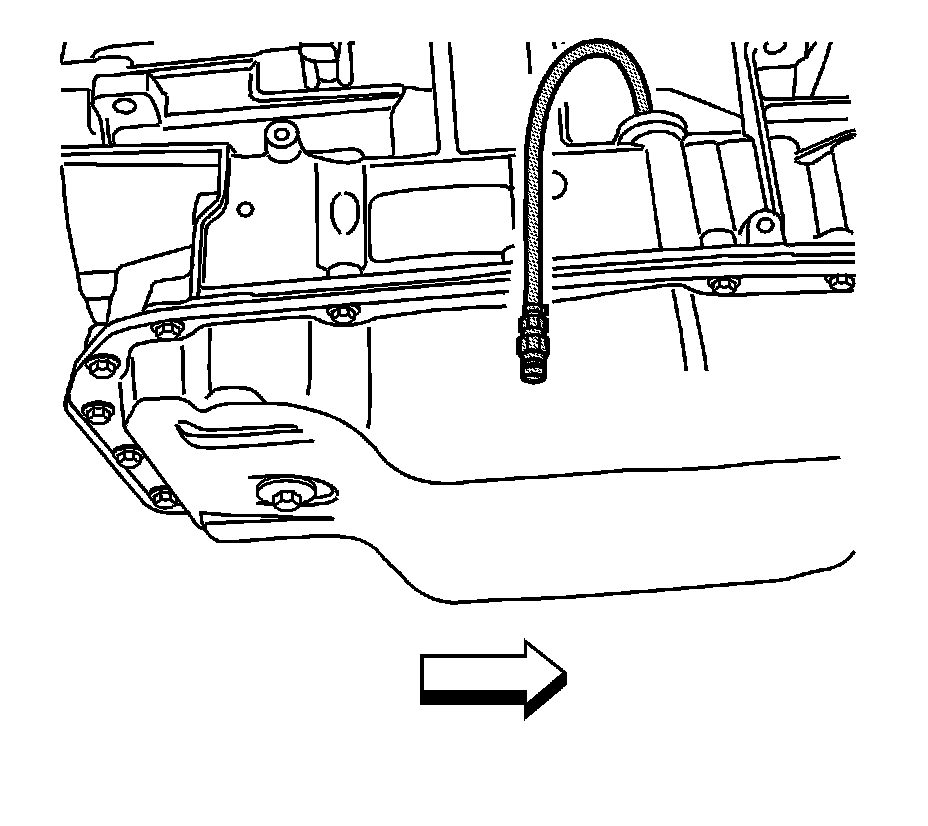
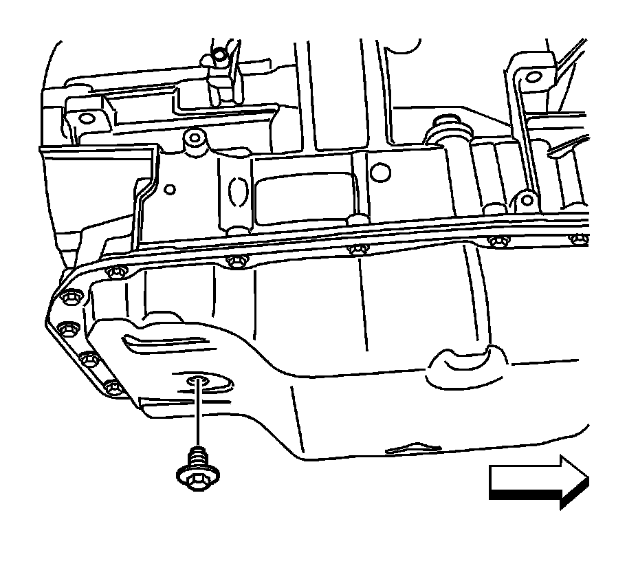
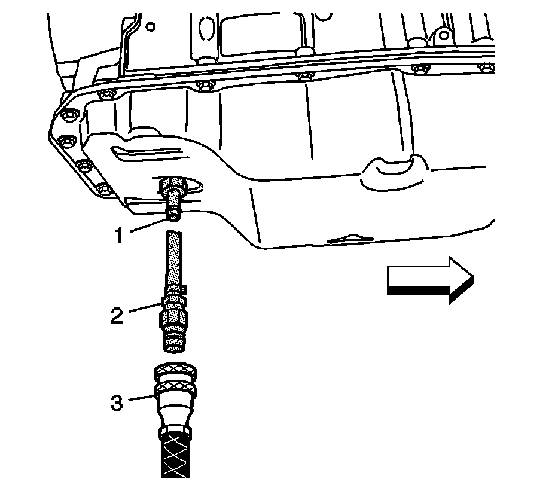

Procedures
Transmission Fluid Fill Procedure
Notice: Use Dexron VI transmission fluid only. Failure to use the proper fluid may result in transmission internal damage.
Perform this procedure for vehicles with transmissions that are not equipped with a fill tube and dipstick. Based on accessibility, transmission fluid may be added through the fluid fill tube plug assembly (1) hole or through the oil level check plug (2) hole in the bottom of the transmission fluid pan.
Tools Required
* DT 47784 Transmission Fluid Fill Pan Adapter
* J 45096 Transmission Oil Cooling System Flush and Flow Test Tool
* J 45096-30 Transmission Cooler Flush Adapters
* J 45096-40 Transflow Oil Fill Adapter
Fill Tube Plug Method
Fill Tube Plug Method:

Notice: Before removing the transmission fluid fill tube plug assembly, thoroughly clean around the plug to prevent dirt or contaminants from entering the transmission during plug removal. Use compressed air to dislodge any caked dirt that may be stuck on and around the plug area. Use a mirror to confirm the area is free of dirt before removing the plug. Failure to clean around the plug may result in transmission contamination.
1. Clean around the fluid fill tube plug.

Important: It may be necessary to use a long pair of 90 degree needle nose pliers to lift the plunger and remove the plug assembly.
2. Unlock the fill tube plug by lifting the plunger. Once the plunger is lifted, remove the entire plug assembly.
3. Determine the approximate amount of fluid needed to fill the transmission, based on the repair performed. Refer to Fluid Capacity Specifications (6L50/6L80/6L90 - Automatic Transmission) . To avoid an under-fill condition, slightly overfill the transmission, and then allow the extra fluid to drain during the fluid checking procedure.

Important: The J 45096 is being utilized as a convenient method to pump the fluid into the bottom pan. A suitable hand pump may also be used instead. When using the J 45096 , monitor the display panel to determine the amount of fluid being pumped from the tool supply tank into the transmission.
4. Using the J 45096-40 (1) and the J 45096 (2), or a suitable hand pump, add transmission fluid through the fill tube plug opening. Refer to Transmission Fluid Cooler Flushing and Flow Test (J 45096) (Automatic Transmission Oil Cooler Flushing and Flow Test (J 45096)) for complete J 45096 operating instructions. Use the FLOW position on the main function switch to pump the fluid.
5. Check the fluid level. Refer to Transmission Fluid Check (Transmission Fluid Check) .
Check Plug Method
Check Plug Method:

Important: When the oil level check plug is removed with the engine OFF, transmission fluid may drain from the hole.
1. Remove the oil level check plug.

2. Install the DT 47784 (1) and, if necessary, one adapter from the J 45096-30 (2).
3. Determine the approximate amount of fluid needed to fill the transmission, based on the repair performed. Refer to Fluid Capacity Specifications (6L50/6L80/6L90 - Automatic Transmission) . To avoid an under-fill condition, slightly overfill the transmission, and then allow the extra fluid to drain during the fluid checking procedure.
Important: The J 45096 is being utilized as a convenient method to pump the fluid into the bottom pan. A suitable hand pump may also be used instead. When using the J 45096 , monitor the display panel to determine the amount of fluid being pumped from the tool supply tank into the transmission.
4. Using the DT 47784 (1), J 45096-30 (2), and the J 45096 (3), add transmission fluid through the check plug hole. Refer to Transmission Fluid Cooler Flushing and Flow Test (J 45096) (Automatic Transmission Oil Cooler Flushing and Flow Test (J 45096)) for complete J 45096 operating instructions. Use the FLOW position on the main function switch to pump the fluid.
Important: Failure to start the engine and move the shift lever through the gear ranges before removing the DT 47784 and J 45096-30 from the bottom pan will result in an excess amount of fluid draining from the check plug hole. This may lead to an under-fill condition.
5. Start the engine and move the shift lever through each gear range. Pause for at least 3 seconds in each gear range.
6. With the engine still running, remove the DT 47784 (1), J 45096-30 (2), and J 45096 (3) and then check the fluid level. Refer to Transmission Fluid Check (Transmission Fluid Check) .